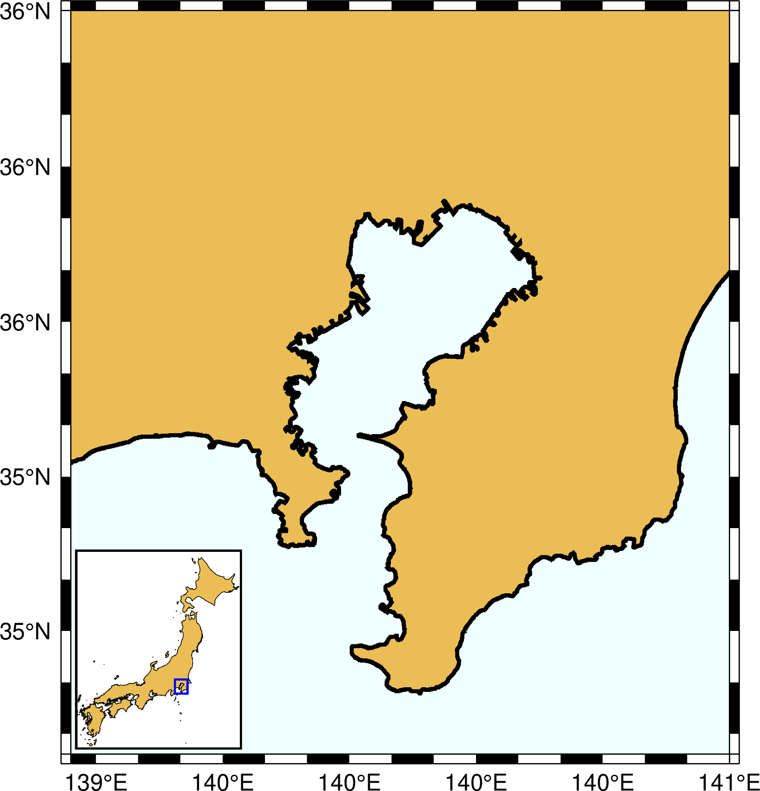
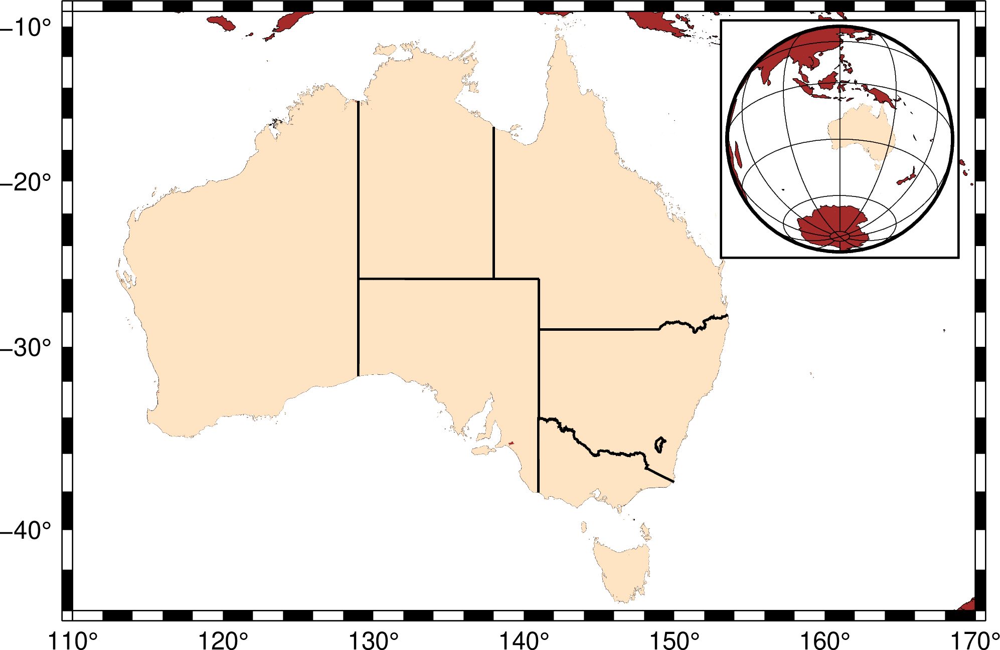

inset¶
| 官方文件: | inset |
|---|---|
| 簡介: | 管理和設置圖中圖模式 |
inset 模塊用於管理圖中圖模式。即在紙張上規劃出一小片區域，並限制接下來的繪製操作均只在該小區域內操作。
inset 模塊包含兩個命令：
- inset begin 用於設置圖中圖模式，其定義了圖中圖區域的位置和大小
- inset end 用於結束圖中圖模式，所有的操作都會回到原大圖中。
在圖中圖中，用戶可以使用任意的投影方式和投影區域。若投影方式中底圖寬度或比例用 ? 表示，則會根據 -D 選項設置的小圖尺寸自動確定小圖的投影參數。
inset begin語法¶
gmt inset begin -Dinset-box [ -Fbox ] [ -Mmargins ] [ -N ] [ -V[level] ] [ --PAR=value ]
必須選項¶
- -Dxmin/xmax/ymin/ymax[+r][+uunit]
類似於 -R 選項，通過指定大圖中的一個矩形區域作爲小圖的繪圖區域。
- -D[g|j|J|n|x]refpoint+wwidth[/height][+jjustify][+odx[/dy]]
指定小圖區域的尺寸和位置
簡單介紹各子選項的含義，詳情見 繪製修飾物
- g|j|J|n|x]refpoint指定地圖上的參考點
- g 指定某地圖座標位參考點
- j|J 通過2字母的對齊方式碼指定矩形區域的某個錨點作爲參考點
- n 在歸一化座標系（即0-1）中指定參考點
- x 在繪圖座標系下指定參考點
- +jjustify 指定小圖區域的錨點
- +odx/dy 在參考點的基礎上設置小圖區域的額外偏移量
- +wwidth[/height] 指定小圖區域的寬度和高度。
- g|j|J|n|x]refpoint指定地圖上的參考點
可選選項¶
- -F[+cclearances][+gfill][+i[[gap/]pen]][+p[pen]][+r[radius]][+s[[dx/dy/][shade]]]
設置小圖區域的背景面板屬性。
若只使用 -F 而不使用其它子選項，則會在小圖周圍繪製矩形邊框。下面簡單介紹各子選項，詳細用法見 繪製修飾物
- +ppen 指定背景面板的畫筆屬性（默認畫筆屬性由 MAP_FRAME_PEN 決定）
- +gfill 設置背景面板的填充色 [默認不填充]
- +cclearances 以設置不同方向的空白間隔
- +igap/pen 在背景面板內部繪製一個額外的內邊框。gap 爲外邊框與內邊界之間的距離 [2p]，默認邊界屬性由 MAP_DEFAULT_PEN 控制
- +rradius 控制圓角矩形邊框，圓角矩形半徑 radius 默認爲 6p
- +s 繪製背景面板陰影區。dx/dy 是陰影區相對於背景面板的偏移量 [4p/4p]。 shade 爲陰影區的顏色 [gray50]。
- -Mmargins
小圖區域內部的額外空白區域 [默認值沒有空白]。其可以取三種形式：
- 一個值，表示四個邊的空白相同
- 兩個用斜槓分隔的值，分別設置水平和垂直方向的空白
- 四個用斜槓分隔的值，分別設置左右下上四條邊的空白
- -N
- 不裁剪超過小圖區域邊界的部分。
- -V[level] (more …)
- 设置 verbose 等级 [c]
- -^ 或 -
- 显示简短的帮助信息，包括模块简介和基本语法信息（Windows下只能使用 -）
- -+ 或 +
- 显示帮助信息，包括模块简介、基本语法以及模块特有选项的说明
- -? 或无参数
- 显示完整的帮助信息，包括模块简介、基本语法以及所有选项的说明
- --PAR=value
- 临时修改GMT参数的值，可重复多次使用。参数列表见 gmt.conf
示例¶
#!/usr/bin/env bash
gmt begin inset-map png,pdf
gmt coast -R139.2/140.5/34.8/36 -JM12c -Baf -BWSne -W2p -A1000 -Glightbrown -Sazure1 --FORMAT_GEO_MAP=dddF
gmt inset begin -DjBL+w3c/3.6c+o0.1c -F+gwhite+p1p
gmt coast -R129/146/30/46 -JM? -EJP+glightbrown+p0.2p -A10000
# 使用 -Sr+s 绘制矩形区域
echo 139.2 34.8 140.5 36 | gmt plot -Sr+s -W1p,blue
gmt inset end
gmt end show

#!/usr/bin/env bash
gmt begin inset-example png,pdf
gmt coast -R110E/170E/44S/9S -JM6i -B -BWSne -Wfaint -N2/1p -Gbrown -EAU+gbisque
gmt inset begin -DjTR+w1.5i+o0.15i/0.1i -F+gwhite+p1p+c0.1c
gmt coast -JG120/30S/? -Rg -Bg -Wfaint -Gbrown -EAU+gbisque -A5000
gmt inset end
gmt end show
